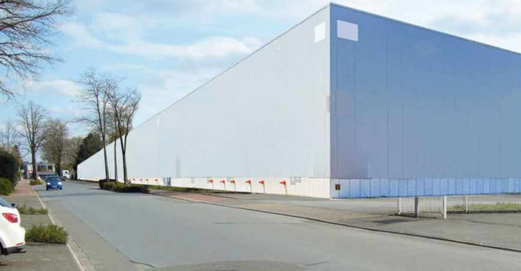
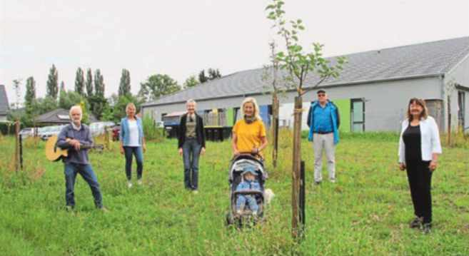
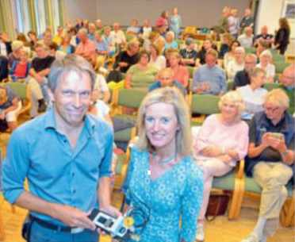
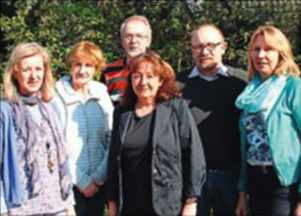
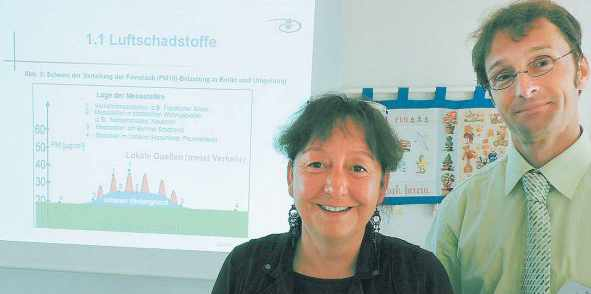

Berichte und Artikel lokaler Medien über den ULS Steinhagen.
Haller Kreisblatt
01. Dezember 2023
13. Januar 2022
11. Januar 2022

23. Juni 2021

Westfalen Blatt
28. Juli 2020

04. September 2019
Westfalen-Blatt
09. Mai 2017

21. April 2015

19. Juni 2012